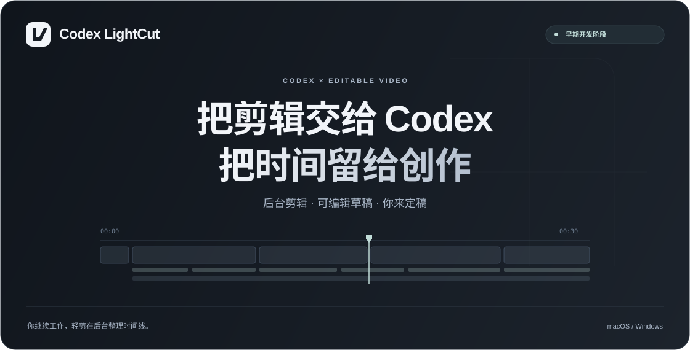

Codex LightCut · Codex 轻剪：把剪辑交给 Codex，把时间留给创作

YOUR FOOTAGE. YOUR FINAL CUT.
从一条素材，
到你能继续调整的初稿。
让 Codex 根据你的要求整理内容，在后台处理剪切、字幕、封面与声音。视频和文字各在自己的轨道上，方便你打开剪映后继续精修。
- 01给出素材和要求把视频交给 Codex，说“帮我剪辑”。
- 02在后台准备草稿处理与校验，不主动打开剪映或模拟键鼠。
- 03在方便时打开并精修保留可编辑轨道，由你确认最终画面与听感。